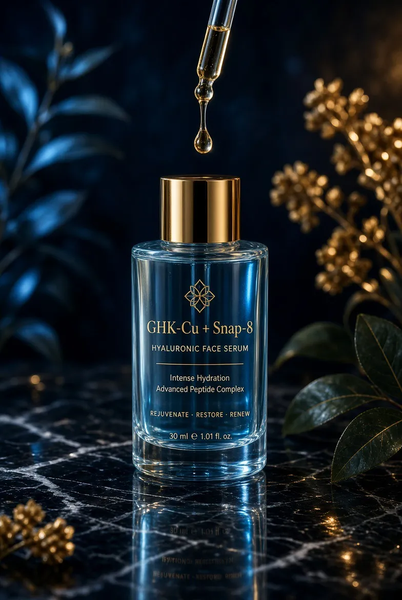
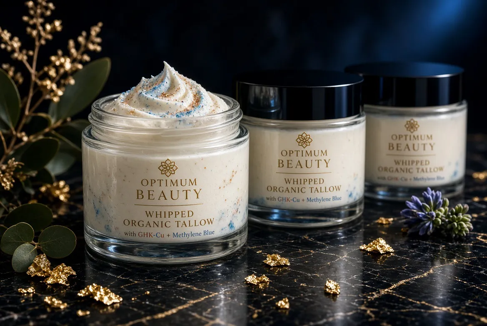

Coach Colin · @coachcolinc
Colin CookPersonal Trainer · GLP-1 & Peptide Lifestyle Coach
Twenty credentials. Three kinds of client. One standard.
Apply for coachingScroll
The coach
Built on education, not hype.
Colin Cook is a certified personal trainer and nutrition coach who works online worldwide, in person locally, and travels to clients. His coaching joins strength training, nutrition habits and accountability, and for GLP-1 clients it runs alongside their own doctor.
- 20ISSA & NASM credentials
- 3client lanes
- 100%blood work required for GLP-1 clients
Education & expertise
The credential wall.
Every plaque behind this text is a certification Colin holds.
ISSA · International Sports Sciences Association
- Certified Personal Trainer
- Elite Trainer
- Master Trainer
- GLP-1 Weight Loss Specialist
- Strength & Conditioning Specialist
- Corrective Exercise Specialist
- Exercise Therapist
- Tactical Conditioning Specialist
- Bodybuilding Specialist
- Glutes Training Specialist
- Nutritionist
- Transformation Specialist
- Brain Fitness Coach
- DNA Specialist
NASM · National Academy of Sports Medicine
- Performance Enhancement Specialist
- Behavior Change Specialist
- Nutritionist
- Sports Nutritionist
- Wellness Coach
Further study
- Neuroscience Neuro-type Individualized Nutrition Specialist
Who he coaches
Three lanes. By application only.
D1-track athletes
Speed, strength, recovery and fueling for athletes chasing college-level expectations. Training and nutrition only.
GLP-1 lifestyle
Keep the muscle while the weight comes off: resistance training, protein habits and check-ins, next to your doctor. Blood work is mandatory.
High-pressure professionals
Realtors, sales leaders, firefighters and those who serve. A system that fits a week with no spare hours.
Optimum Beauty · topical peptide skincare
For skin and hair that look cared for.
A small line of topical products built around copper peptide (GHK-Cu). They are cosmetics: made for the look and feel of skin and hair, used on the surface, every day.


Cosmetic products. They are not intended to diagnose or change any medical condition. Patch-test first and ask your dermatologist if you have a skin condition.
Peptide beauty & anti-aging clinics · med spas
Two ways clinics work with Colin.
Coaching for your GLP-1 patients
Your team handles the medicine. Colin handles strength training, protein habits and weekly accountability so patients keep muscle, and reports back to you.
Optimum Beauty at your front desk
Topical peptide skincare your clients already ask about, with cosmetic-only claims your staff can explain in a sentence.
Apply
Send one word: LANE.
Message LANE to @coachcolinc on Instagram with your 90-day goal, whether you have recent blood work, and online or in person.
Open InstagramQuestions
Who is Colin Cook, the personal trainer?
Colin Cook, known as Coach Colin (@coachcolinc), is a certified personal trainer and GLP-1 / peptide lifestyle coach with 20 ISSA and NASM credentials. He coaches online worldwide and in person.
Does Colin prescribe GLP-1 medication or peptides?
No. He is a coach, not a doctor. He does not prescribe, dose or administer anything, and he requires blood work before GLP-1 lifestyle coaching starts.
What is Optimum Beauty?
A topical peptide skincare and hair line: a GHK-Cu + Snap-8 hyaluronic face serum, whipped organic tallow with GHK-Cu, and a hair oil. Cosmetic products for the look and feel of skin and hair.
Can an anti-aging clinic or med spa work with Colin?
Yes: by referring GLP-1 patients for muscle-protecting strength and habit coaching, and by asking about retailing Optimum Beauty.